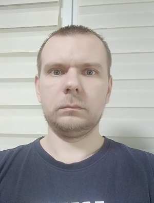

Dmytriiev Volodymyr

Date of birth: August 17, 1986 (34 full years)
The city of Poltava
Marital status: married, have a son
Goal: Work in the implementation of which full implementation is possible professional skills and their creative, human potential, obtaining material and moral pleasure.
Education: Full higher, specialist diploma. Poltava VG State Pedagogical University Короленка. Specialty "Pedagogy and methodology secondary education. Labor training ", qualification teacher of labor training (technical work), applied and technical creativity, basics of computer science, drawings and safety of life. 2003 - 2008